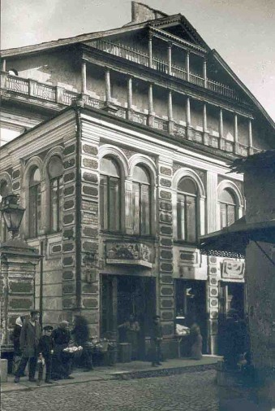

The Great “Punishment” of the Dayan of Vilna

I visited the home of the Lieders in Shikkun Chabad in Lud to be menachem the family on the loss of their young father, R’ Tzvi.
I met the extended family, Lubavitcher Chassidim, some of them shluchim of the Rebbe, spreading Chassidus to hundreds and even thousands and preparing the world for Moshiach.
During our conversation, an amazing story was told about the family’s roots. The Lieder family descends from the Maharal of Prague. But I don’t want to go as far back as that with this story; rather, to the period of the great cherem that the opponents of the Alter Rebbe placed on him and the teachings of Chabad Chassidus.
PART II
It was during those dark days in which Misnagdim persecuted Chassidim. Whoever joined the “cult” was ostracized, pushed away and expelled from his home, his community and often, even his family.
The peak of the war was the cherem placed by the rabbinical court of Vilna on the Alter Rebbe. Cherem. Excommunication. It’s a terrible thing. Three dayanim of Vilna convened as a formal court, and without checking out whether the rumors about Chassidim were true or not, they placed a cherem on Chassidim.
One of the three dayanim was Rabbi Eliyahu Hindas, who served as a dayan in Vilna for nearly 50 years (dying on 24 Tamuz 5589/1828), but his hand did not tremble as he grasped the quill and added his signature to the cherem.
And his terrible “punishment” did not take long to come.
His son, Rabbi Shlomo Zalman (born in 5542 in Vilna) discovered the light and sweetness of Chassidus. It was when he passed by the Chassidim’s shul and heard their soulful davening, saw the seriousness on their faces as they supplicated before their Father in heaven, that an inner fire was ignited within him. He felt that the Chassidim were not as people described them. He began studying their ways and even ended up joining with them. He changed his ways until he became a Chassid himself. He knew that the retribution would be terrible but was unafraid.
Not long afterward, his “crime” was discovered: Shlomo Zalman Hindas had become a Chassid! The prestige of his father did not protect him, and the community began persecuting him with a vengeance. They tormented him at every turn. The local kids did not spare him any and all insults and humiliations and even threw rocks at him as he walked down the street. He soon realized that he could not go on in this way and moved from Vilna to Lida.
At this time, he became mekushar with a great love to his master and teacher, Rabbi Mordechai of Lechovitz, one of the great students of Rabbi Shlomo of Karlin.
R’ Shlomo Zalman’s parents sat Shiva for him for fourteen days, for that was the custom at that time, to mourn for fourteen days for a “dead Chassid,” seven days for the usual Shiva period and another seven for his soul.
In Lida, R’ Shlomo Zalman continued to grow in Torah and Chassidus. He devoted his days to learning in great depth and to profound soulful prayer.
His teacher and master Rav Mordechai passed away and was succeeded by Rabbi Noach of Lechovitz, who continued to lead his flock with kindness and mercy, elevating his followers to ever greater spiritual heights in the service of Hashem.
Twenty-five years of spiritual elevation passed for him in Lida, far from his parents’ home and from Vilna, his hometown. He nearly forgot about them.
PART III
It was an ordinary day as R’ Shlomo Zalman sat at one of the benches in the Chassidic beis midrash and delved into his learning. His Rebbe went over to him and tugged gently on his sleeve to attract his attention and asked him a question that astonished him. “How is your father?”
R’ Shlomo Zalman’s tongue clung to the roof of his mouth. He hadn’t seen his father in twenty-five years. It was twenty-five years since he was banished in ignominy from the community in Vilna. He had no connection with him, nor with any of his family or former friends.
He shrugged as though to say, “How should I know?” and he wondered at the question, since his Rebbe was well aware of his life story.
The tzaddik, Rav Noach, did not respond, and turned to go back to his place.
The next day, the same scene repeated itself. R’ Shlomo Zalman was immersed in his learning; his Rebbe again surprised him with the question about his father; and his response was again the same shrug of his shoulders.
When the question was directed at him for a third time, he realized something was afoot, and that his Rebbe was hinting something to him.
Having no choice, and with great trepidation, he packed his meager bag and set off for Vilna. He had no idea if it was still a dangerous place for him as it had been in the past. Had the people there changed? Had the attitude towards Chassidim changed over time?
He arrived at the home of his parents in the late evening, and with a pounding heart he knocked at the door. His mother came to the door and her eyes opened wide. Despite the quarter of a century that had passed, she could not help but recognize her own son. She nearly collapsed on the spot from the intensity of the surprise. After all, she had sat Shiva for him.
“Mama, can I come in?” asked the son of his mother, whose frozen stance in the doorway blocked his entrance. His mother was very afraid, concerned. She knew how dangerous it was. The fire of controversy raged all around, and she, as a simple woman, certainly had no desire to become embroiled in contention and hatred. Except that now her son was standing before her and asking to come into her home.
Without saying a word, she turned around while leaving the door open behind her. The son entered, carefully closing the door behind him to avoid prying eyes that might take notice of his entrance.
Inside, his mother allowed herself to speak to her son, albeit apprehensively. She knew that it was forbidden by the cherem and yet, she didn’t need to be particularly clever to discern that her son was still as religiously upright as he always was. His refined face demonstrated that he had risen in the service of Hashem.
He asked to speak to his father, to see how he was. This is why he had come, upon his master’s request.
His mother told him that despite the many years that had passed, his father was still furious with him; his hatred had not waned. She warned him of the ramifications of meeting with his father.
Still …
His mother decided to conceal her son in an inner room and promised him that she would speak to his father and try to smooth the way before he would see him.
Late in the evening, from his hiding place, R’ Shlomo Zalman could hear the front door opening and heard the familiar voice of his father. Nothing had changed. His heart froze. He knew that the fateful moment was approaching. He wondered, yet again, why his Rebbe had sent him to inquire about his father.
His mother’s entreaties and persuasive talk took hours. Her husband was a great man and it wasn’t easy to change his mind. It was first at one in the morning that he finally agreed to see his son and test him in his learning.
“If I am convinced that despite what he has done, he is still religiously observant and a scholar, I would be willing to consider talking to him,” he told his wife.
The father entered the room with a piercing gaze and a severe look on his face. He tested his son for an extended time on all tractates of Shas and discovered him to be filled and overflowing with knowledge, a true Torah giant, proficient in every area of Torah.
Only then did his gaze soften somewhat and he held out his hand to his son in greeting.
The conversation between father and son was pleasant, to the relief and joy of the mother who stood off to the side.
It was very late at night when the father was completely captivated by the scholarly charm of his son and asked his forgiveness for persecuting him when he “defected” to the newly paved path of Chassidus.
Silence, born from both celebration and pathos, hung in the air. It was a historic moment. Then the son broke the silence by saying, “Halacha states that a person needs to ask forgiveness in the same place where the injustice was done. You insulted me in front of the entire great beis midrash of Vilna.”
The father immediately understood the significance of what he was saying. His son was asking for a public apology, rather than simply making do with a private understanding in a dark room. It wasn’t obstinacy that drove the son to make this request, and not for his honor, but in honor of the Chassidic movement and the Chassidim who were persecuted for no reason.
The father was lost in thought for quite some time and after a protracted inner battle, he agreed. Let it be said in the father’s praise that this required quite a bit of courage.
He suggested to his son that they go to sleep for what was left of the night, and early in the morning they would go to the beis midrash together. The fact that they arrived together would demonstrate that the father accepted his son back. After the davening, he would go up on the bima platform and ask forgiveness from his son in front of everyone.
At the prearranged time, the son knocked on his father’s door to awaken him for davening but there was no response. That was exceedingly strange, for his father was always one of the first to arrive in the beis midrash. He assumed it was because his father was particularly tired out by the eventful night.
When he gently opened the door and tried to wake his father, he was shocked to discover that his father had died.
PART IV
At the end of the Shiva, R’ Shlomo Zalman returned to the court of Rabbi Noach of Lechovitz. When he entered the Rebbe’s room, he saw that the Rebbe knew what had happened.
“I had to keep your father in this world for three more days than were decreed for him, so he would have the merit of asking forgiveness from you.”
There was a silence and then the tzaddik said, “Despite everything, your father deserved an opportunity to gain your forgiveness.”
Rabbi Shlomo Zalman moved to Eretz Yisroel in 5612 and passed away in Teveria on 17 Teves 5619.
***
The descendants of R’ Eliyahu Hindas would cheerfully share that the “greatest punishment” possible was that thousands of his descendants were Chassidim, of various strains and branches, including many Lubavitcher Chassidim who go in the ways of the Alter Rebbe against whom he had declared a cherem, but whose Torah now illuminates and is spread throughout the world.
L’ilui nishmas R’ Tzvi Lieder a”h and thanks to his son, R’ Dudi
Menachem Ziegelboim. "The Great “Punishment” of the Dayan of Vilna." Beis Moshiach, no. 1142 (November 21, 2018).